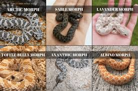

Or would you prefer a Hognose?

Here is a short video on Hognose keeping.
Hognose snakes are popular pets due to their small size (2-3 feet), docile, non-aggressive temperament, and distinct, entertaining personalities. They are generally easy to care for, requiring minimal space (a 20-gallon tank for males) and are highly prized for their varied, colorful morphs and cute, upturned snouts.